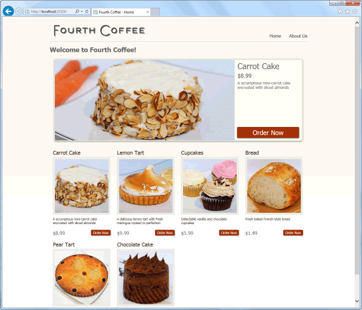
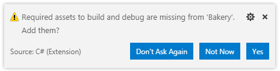
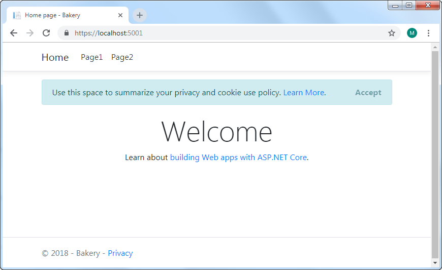

The Fourth Coffee web site began life as the ASP.NET Web Pages Bakery template site. The template site provided a "state of the art" online ordering system that enables users to place orders for a variety of baked goods. From a technical perspective, the site demonstrated
- the use of a file-based database for storing product information
- basic data access
- creating and processing forms
- and emailing via the WebMail helper function.

In this series, the Web Pages version is ported to Razor Pages. The port takes place in 7 steps, each one examining a facet of Razor Pages development. Thereafter, the Bakery site will be enhanced with additional functionality, serving as a platform to illustrate many other ASP.NET Core features in the context of a Razor Pages application.
The steps are as follows:
- Creating the application
- Adding a New Page
- Creating The Model
- Adding A Migration
- Working With Data
- Using Forms
- Adding Email
The site will be built in Visual Studio Code - the open source code editor produced by Microsoft with the help of contributions from the developer community. Data will be stored in a SQLite database. Both of these choices enjoy the benefits of being cross-platform and relatively easy to use, which helps to make this series accessible to developers of all abilities on any platform.
This site is built using ASP.NET Core 2.2 and Entity Framework Core, an Object Relational Mapper developed by Microsoft.
Get the bits
To start, you need to get the bits. First, you can obtain .NET Core here. You should download the SDK (Software Development Kit), which is needed for building .NET Core applications. The other option - the runtime - is what you would install on a server where you want your ASP.NET Core applications to run. The SDK includes the runtime.
Next, you need Visual Studio Code. Download and install it, then install the C# extension, which is needed for C# development. You can locate this by clicking the Extensions icon on the left hand side and typing "C#" in the search box that appears at the top of the pane. You should also install the C# Extensions extension, which provides templates for adding C# class and interface files.
Finally, I use the Material Icon Theme extension, which provides icons for files and folders in the Explorer pane.
Create a blank Web Application
You need to create a folder to house your application files. You can do this in any way that you like. You can manually create the folder, and then open it in VS Code, or you can open VS Code and use its integrated terminal to create a directory with the standard mkdir command. The terminal in VS Code is accessed by pressing Ctrl+' (or ⌘+' on a Mac). In any event, the folder should be named Bakery.
Once the folder is created, open it within VS Code. Then, ensuring that the terminal's active location is in the Bakery folder, create a new Razor Pages application with the following command:
dotnet new webapp
Note that the command dotnet new razor will also result in a Razor Pages project being created.
The project takes its name from the folder that it is created in. Ideally, you want this to be "Bakery" with a capital "B". That way, if you want to copy and paste code from this series into the project that you create, you will minimise the possibility of errors creeping in via mixing the case of the project namespace. If you use the terminal to navigate to the Bakery folder once it has been created and use all lowercase (e.g. cd c:\bakery), the resulting project - and its default namespace - will have a lowercase "b".
Once you have created the application, the dotnet restore command is automatically executed. This results in dependencies and tools required by the project being restored. If this is your first .NET Core application, this command can take a little while to complete. Once completed, you can open the Bakery folder from within VS Code to see the files and folders that were created.
At this point, you will probably be prompted to add missing assets required to build and debug the project:

Click Yes.
The File and Folders
Before moving on, we shall review the files and folders that the template generated:

The .vscode folder was generated when you clicked Yes in the previous step. It contains files that provide configuration for debugging.
The bin folder contains the output of a Build operation - the compiled binaries for the application. There is nothing much there at the moment - just a folder named Debug containing another folder named netcoreapp2.2. The application has not been compiled (built) yet. That will happen soon.
The obj folder contains a variety of files. You will hardly ever need to access this folder, except to perhaps delete its contents entirely. It is used by the framework as a place to store temporary files and other objects used in the build process.
The Properties folder contains a file called lanchSettings.json. This is a configuration file for launching the application in a browser.
The root of the application consists of 5 files. There are two JSON files named appsettings. These contain application configuration information. They are the equivalent to the
appSettingssection in the web.Config file of previous versions of ASP.NET. The version with Development in its name will only be used when the application is running in development mode.The .csproj file is the standard MS Build XML-based project file. It contains project settings and references to files used by the project. MS Build uses this file to configure the actual build process of the application.
All ASP.NET Core applications are actually console applications. The default entry point into any console application is the
Mainmethod in theProgramclass found in the Program.cs file. TheMainmethod in this case is responsible for configuring a web host for the application and launching it so that it is ready to serve requests.The Startup.cs file contains a class called
Startup. This class has two principal methods -ConfigureServicesandConfigure. These are used to configure the application's request processing pipeline (optional components that the application needs) and the services that it relies on.The wwwroot folder houses static files - images, JavaScript files, CSS files etc.
Finally, the Pages folder. This is the default location for Razor Pages. The template site includes three: Error, Index and Privacy. You will add to this shortly.
Build And Run The Application
At the command prompt, type the following:
dotnet run
You should get the following confirmation:
Now listening on: https://localhost:5001
Now listening on: http://localhost:5000
Application started. Press Ctrl+C to shut down.
Open a browser and navigate to https://localhost:5001. The site should appear like this:

The cookie consent banner across the top of the page forms part of ASP.NET Core templates since version 2.1. It is intended to help site owners to comply with GDPR regulations introduced by the European Union in May 2018. It also helps to conform with Google's privacy recommendations. It is up to you to provide relevant content in the Privacy page that forms part of the template. You can remove the banner by clicking Accept, or by removing or commenting out <partial name="_CookieConsentPartial" /> in the _Layout.cshtml file found in the Pages/Shared folder.
The navigation to Page1 and Page2 currently goes nowhere. That will be addressed in the next section.
Summary
At this point, you have used the .NET Core SDK and Visual Studio Code to create a new Razor Pages application. You have reviewed the contents of the project folder, and you have launched the application in a browser. In the next section, you will add a new page and begin customising the site content.
Next: Adding a New Page